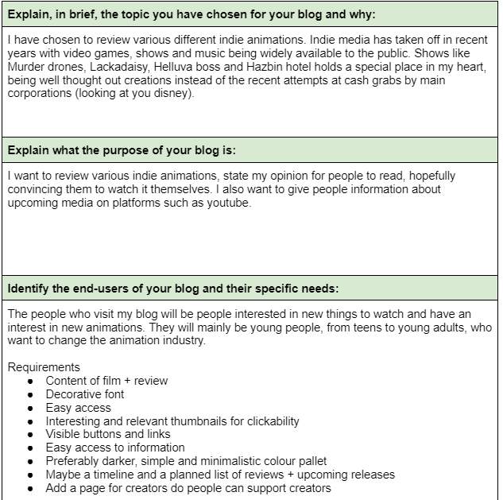

Sample code from the quiz
We first learnt about website purpose and their users needs, not focusing as much on website heuristics.
For this assessment we were to design a blog of our choosing.
I chose to do a blog about up and coming indie animation on youtube. This is because I have an interest in animation and enjoy this free community without it's corprorate overlords.